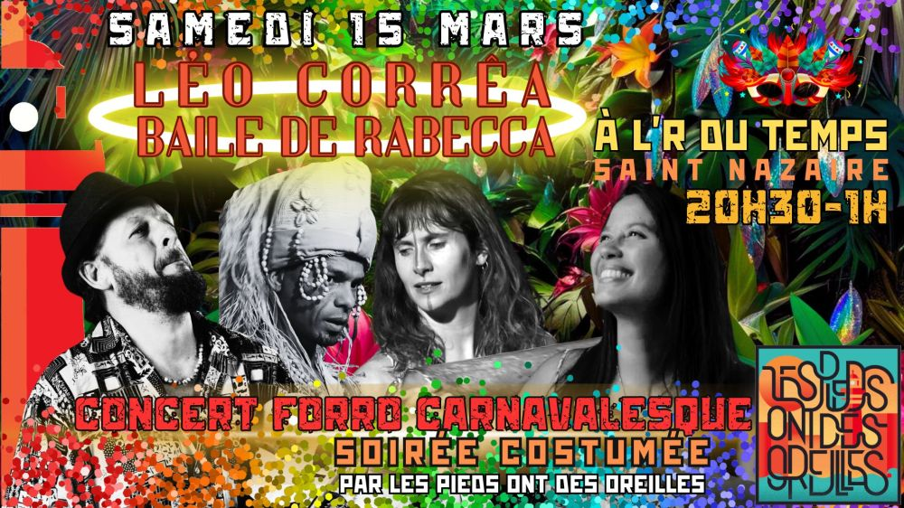

Concert Carnavalesque Forró avec Baile De Rabeca à Saint-Nazaire

Nous entrons en zone de turbulence de 🎉👹 CARNAVAL 🎈🎭, partout dans le monde… et surtout à Saint-Nazaire ⛴️
Alors pour fêter ça, Léo Corrêa et son Baile de Rabeca seront avec nous pour une nouvelle SOIRÉE CARNAVALESQUE qu’on prévoit hautement paillettée, déguisée, énergique et festive, dans notre magnifique bistrot l’R du Temps.
Pense DÉGUISEMENT / COSTUME / MAQUILLAGE / MASQUE / FANTAISIE et TOURBILLON DE FOLIE 😃
Baile de Rabeca, qu’on ne présente plus, nous offrira un déluge de forró, coco, ciranda, samba et autres danses et musiques du Nordeste Brésilien.
Faisons ensemble, de ce moment, un vrai délire de carnaval, on a besoin de sur toi 🤙
🚀 DEBUT DE SOIREE: 20h30
Initiation aux danses du nordeste: 20h30
Concert: 21h30
FIN: 1h
💥 BILLETTERIE – PAF 10€ – JAUGE LIMITÉE à 90 billets :
🚗 COVOIT: c’est ici !
https://docs.google.com/spreadsheets/d/18pup31706aoBu_PXvhgpxJNuN4yYGhuRcLZrT8erUIk/edit?usp=sharing
🌮 RESTAURATION
Planches et fingerfood sur place, miam 🤤
🛋️ COUCHSURFING
Contactez-nous !
🙏 HELP
Nous cherchons un PHOTOGRAPHE bénévole pour capter l’émotion du moment 📸 .
Il aura sa place offerte pour le concert, youpi !
☎️ CONTACT
07 63 47 55 85 / 06 60 40 15 17
lespiedsontdesoreilles@gmail.com
Ate logo!
Vidéos
Les vidéos sont hébergées par YouTube. Elles ne se chargent, et YouTube n'est contacté, qu'au moment où vous cliquez sur lecture.